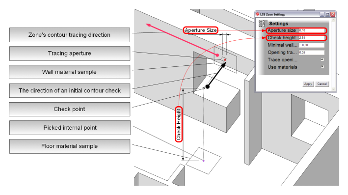
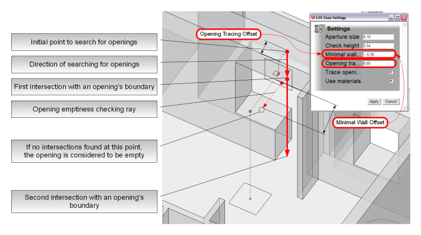

It is a procedure of automatic zone's contour generation by picking a point inside a closed space
bounded by some geometric elements (faces, groups or components, which containing faces) in an active model.
The idea of automatic tracing is based on the assumption, that an average room (or any other closed space)
has completely closed contour regardless of openings at a certain level above room's floor level.
This 'check' level has to be located above the highest opening and below room's ceiling.
So the first step, which is performed before tracing, is computing of coordinates of check point, by adding
'check height' value to z-coordinate of picked internal point. 'Check Height' is an adjustable value: it can be adjusted
through 'Settings' dialog or right while 'LSS Zone' tool dialog is active just by typing new value using value control
box, when 'pick internal point' mode of a tool is active.
When 'check point' is calculated, tracer makes 'the first shot': it checks if a ray started from 'check point' and directed
the same way as model's x-axis intersects something in an active model. Tracer is considered to be ready for tracing
if intersection is detected.
The point, where intersection took place is very important: it is an 'initial point' of a contour being traced. Tracing
procedure stops after reaching the 'initial point'.
Tracer also reads a material of a face intersected during first step, so it can be used as 'walls material' of a zone.

Zone's contour tracing procedure performs the following steps:
-
make first tracing step: move tracing aperture one step forward along tracing direction
-
run tracing loop:
- move aperture one step forward along tracing direction
- check if aperture reached the initial point
- check if aperture intersected a new bounding face or not
- in case if previous face is detected again: move aperture yet another one step forward along tracing direction
- in case if new bounding face is detected: add new nodal point and set tracing direction parallel to a newly detected bounding face
- check for openings under aperture position if openings checking is enabled
-
exit tracing loop if an aperture reached the initial point

The main logic is bacically the same as zone's contour tracing. The main difference is that tracing goes on
in a vertical plane, which is parallel to a plane of a face currently detected by zone's contour tracing aperture.
So opening tracing performs the following steps:
-
compute a 'check ray', which will search for openings:
-
start point of the ray is located a bit lower than room's ceiling level and it shifted from
wall's surface into wall's body interior at a distance equal to 'opening tracing offset'
- ray directed downwards parallel to z-axis
-
make first 'check shot' looking for intersection of computed 'check ray' with geometry
-
if an intersection was detected and it took place somewhere at level above room's floor level, then
opening tracer checks if the face being intersected is actually a boundary of an opening:
-
make the second 'control shot' from the first intersection point
-
the second intersection point has to be also above room's floor level (or directly at a floor level)
-
check if the first intersected face is really a boundary of an opening by 'looking' from
a point, which is slightly below this face towards wall's interior surface
-
in case if there was no intersections detected at a distance equal to 'minimal wall offset',
intersected face is considered to be a boundary of an opening
-
if all tests were completed successfully, opening tracer begins tracing from the point of a first intersection
of opening 'check ray' with the first opening's boundary face
-
opening tracer makes the first tracing step: move tracing aperture one step forward along opening tracing direction
(opening tracing direction lies in a vertical plane, which is parallel to a wall's interior surface)
-
run tracing loop (the same logic as zone's contour has):
- move aperture one step forward along tracing direction
- check if aperture reached the initial point
- check if aperture intersected a new bounding face or not
- in case if previous face is detected again: move aperture yet another one step forward along tracing direction
- in case if new bounding face is detected: add new nodal point to an opening contour and set tracing direction parallel to a newly detected bounding face
-
exit tracing loop if if aperture reached the initial point
(the initial point of opening tracing is a point where vertical 'check ray' intersected first opening's bounding face)